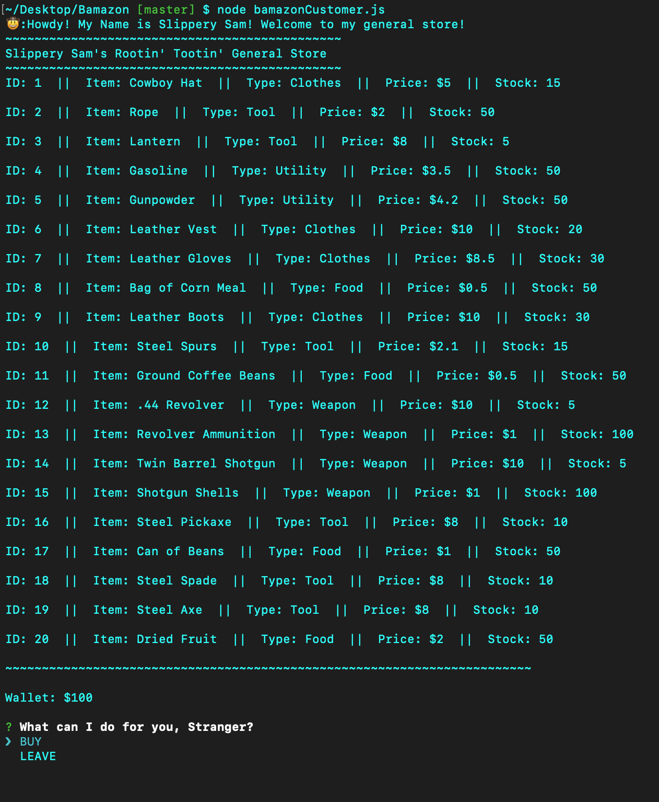
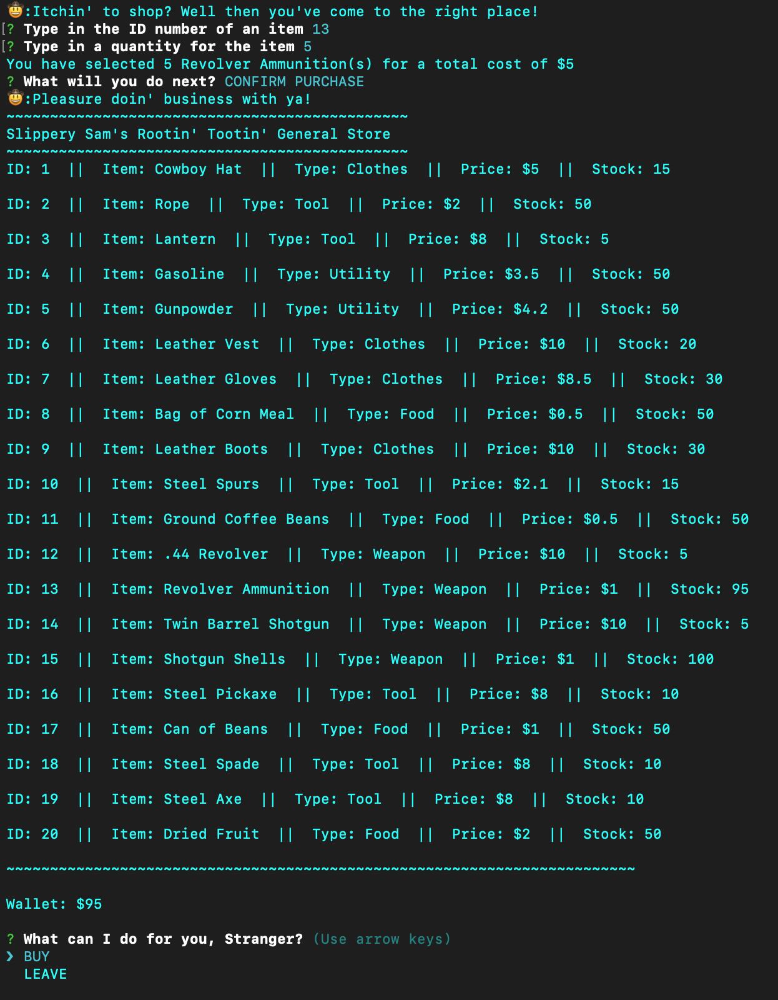
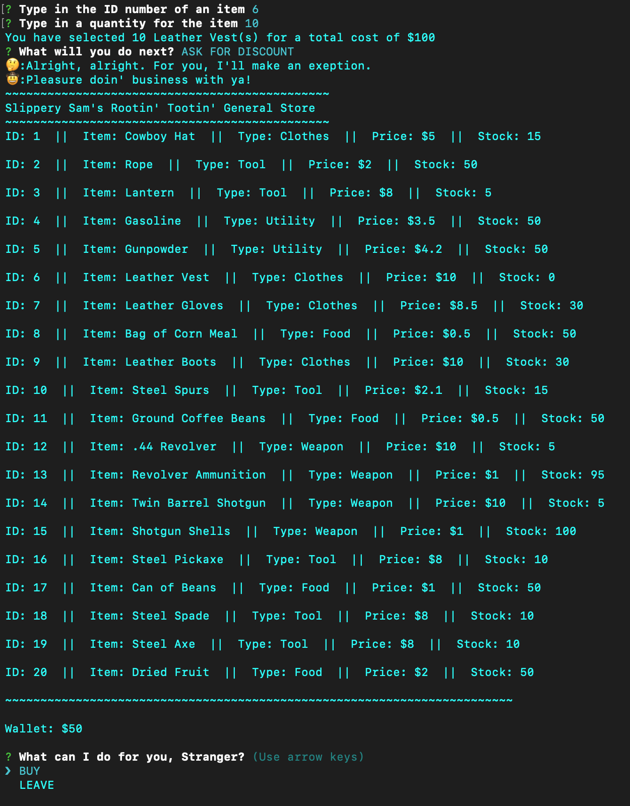
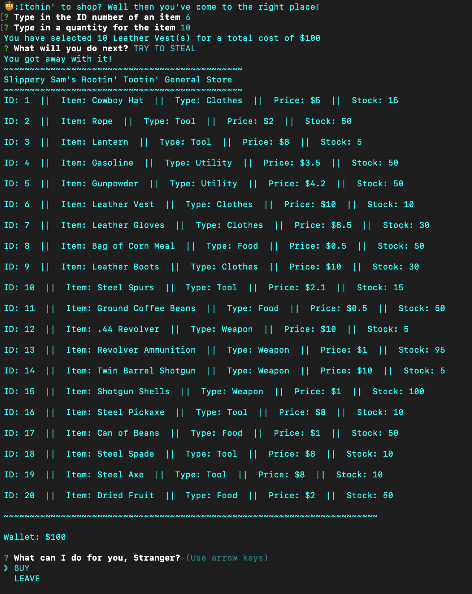

Bamazon
Upon using node to start the program, the user will see the entire store displayed with all of its contents. The user can also see the contents of its wallet, which diplays how much money is available to buy items from the store. The store is a database created using Mysql and an inquirer prompmt will ask the user if it wants to buy an item or leave. When selecting an item to purchase, the user is prompted by an inquirer to identify the item by its ID number, and then specify the quantity of the item it wishes to purchase. After placing an order, the user is prompted by another inquirer and has four choices to make regarding its order: confirm purchase, ask for discount, try to steal, or cancel order. If the user chooses to confirm purchase, the quantity of the item ordered is subtracted from the item's stock in the store. In addition, the total cost of all the items purchased is subtracted from the user's wallet. Orders can only be fufilled if both the store has sufficient stock and your wallet has sufficient money. The discount option introduces a new variable called luck. Luck is basically a randomly generated number and the result of this option depends on the value of the luck variable. When the user asks the shopkeeper for a discount on its order, there is a 40% chance that the shopowner will give the user the discount. If that happens, the purchase is confirmed but only half the amount of money is subracted from the wallet. There is a 40% chance that the shopkeeper will refuse to give a discount, in which the order is canceled. There is also a 20% chance that the shopkeeper will become offended by the user's asking for a discount, in which the user is kicked out of the store and the program ends. The steal option also uses the luck variable. If the user tries to steal its order, there is a 50% chance that it will succeed. When user successfully steals something, the store's stock decreases, but the money in the wallet stays the same. If the user is unsuccessful in stealing, the shopowner will kick you out of the store and the program ends.
Source Code
   